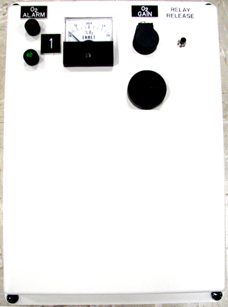
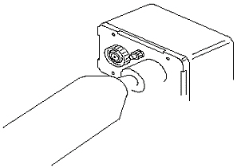
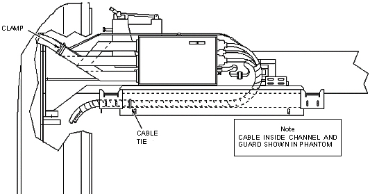
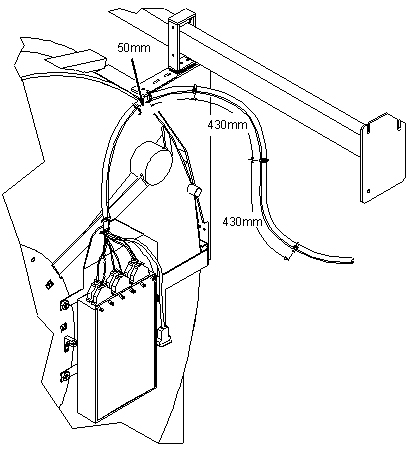
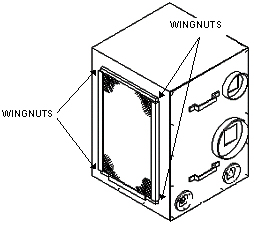

Operating Documentation
Direction 5440000, Rev# 5
Signa HDxt Service Methods
Module Version 7.0, Version Date 11/4/10
Operating Documentation |
| Required Persons | Preliminary Reqs | Procedure | Finalization |
|---|---|---|---|
| 1 or 2 (see Overview) | Not Applicable | Not Applicable | Not Applicable |
Magnet Room Planned Maintenance consists of the following procedures:
Inspect Oxygen Monitor and Calibrate (1 person)
Inspect Front Cover Cable (1 person)
Inspect Magnet Room RF Integrity with Correlated Noise Test (1 person)
Inspect Cardiac Gating Cable (1 person)
Inspect Patient Blower Fans and Filters (2 people)
Inspect Pneumatic Patient Alert System (1 person)
| Item | Qty | Effectivity | Part# | Manufacturer | |
|---|---|---|---|---|---|
| Oxygen Monitor Calibration Kit with Adapters (for ISA-42M and ISA-60M) | 1 | - | 5399042 | - | |
| Dale 600 (120 VAC) or Dale 600E (220 VAC) Safety Analyzer or Microguard (MG-5) with adapter cables for cardiac leads | 1 | - | 46-328406G1 or 46-194427P16 | - | |
| Small, Flat-blade Screwdriver | 1 | - | - | - | |
| Voltmeter (Only used for circuit alignment.) | 1 | - | - | - | |
There are separate calibration procedures for the two different Oxygen Monitors. Follow the instructions in Section 4.1.1 for the older style ISA-42M. Proceed to Oxygen Monitor Calibration for ISA-60M for the new ISA-60M Monitor.
This procedure checks the ISA-42M Oxygen Monitor operation when the oxygen level is at 20.9% (normal air) and when it is reduced to less than 18% (alarm point). The assumption is that a Sensor Retrofit Kit 46-301672P3 was installed on the Remote Sensor Module. The new five-year Oxygen Sensor (GE P/N 5339912) consists of a sensor cell, a battery, and a PC board with conversion circuitry contained in an RF-shielded enclosure. The procedure is the same for the 46-301672P3 or the new 5339912 Oxygen Sensor.
Illustration 1: Older ISA-42M Oxygen Monitor

The functional check uses the newer Aerosol Gas Calibration Kit 5399042. This kit includes two aerosol containers: one filled with 20.9% oxygen with a nitrogen balance, and one filled with 17.0% oxygen with a nitrogen balance. These aerosol containers are constructed of aluminum and can be safely brought into the Scan Room. Gas flowing time is limited to 30 to 45 seconds per container. These aerosol containers can be used for up to three calibrations if removed after a 15-second purge attachment. A system test should be performed immediately after aerosol removal. There are two adapters included in the Calibration Kit; the blank adapter will be used on the ISA-42M Oxygen Monitor.
| ||||
| Mark the aerosol label after each test where indicated so that filled containers may be distinguished from those empty or almost empty. | ||||
To conserve gas, a known volume of a gas mixture must be trapped between the calibration adapter and the oxygen sensor. To properly accomplish this, an O-ring is included with this kit and must be permanently installed in the oxygen sensor port. The O-ring should be placed by hand or with needle-nose pliers at the bottom of the threaded retrofit block firmly against the foam ring of the oxygen sensor. Refer to the illustration below for placement details.
Illustration 2: Oxygen Sensor Components

Turn on power to the Control Unit. The green power LED should glow.
| ||||
| For the next step, the Remote Sensor Module must contain a Sensor Retrofit Kit 46-320936P1. If missing, order and install before continuing. | ||||
Screw the blank Aerosol Gas Calibration Adapter from the Calibration Kit into the gas sensing port (which contains the retrofit plate) located on the front cover of the Remote Sensor Module shown in Illustration 3.
Using the aerosol container (marked 20.9% Oxygen) found in the Oxygen Calibration Kit, remove the cap and insert the nozzle at the top of the container into the Aerosol Calibration Adapter. (See the three illustrations below.)
Snap the container onto the plastic fingers of the adapter by attaching it at an angle.
Apply moderate force until the aerosol container snaps into place. When properly attached, the automatic gas discharge will be audible.
Illustration 3: Attaching Calibration Tool to Oxygen Sensor Port

Illustration 4: Inserting Oxygen Container into Calibration Tool

Illustration 5: Container Snapped into Place

| NOTE: | Because of the annoying and possibly alarming sound made by the Sonalert, it may be disabled during testing by disconnecting its red wire. Be sure to reconnect the wire after testing. Attaching a 10K resistor in series with the Sonalert permits audible alarm operation at a reduced volume. |
Wait approximately 15 seconds before removing the 20.9% oxygen aerosol container.
Verify the meter (shown below) reads 20.9% oxygen.
Illustration 6: Control Unit Meter

Remove the Aerosol Container by tilting it at an angle until it snaps free from the calibration adapter, or leave it in place for continuous gas discharge. (Continuous discharge offers the highest accuracy while gas is available in the aerosol container.)
| NOTE: | If removed, retain for possible repeated tests. |
Using the aerosol container (marked 17.0% Oxygen) found in the Oxygen Calibration Kit, remove the cap and insert the nozzle at the top of the can into the Aerosol Calibration Adapter. (See Illustration 3 through Illustration 5.
Snap the container onto the plastic fingers of the adapter by attaching it at an angle.
Apply moderate force until the aerosol container snaps into place. When properly attached, automatically discharging gas can be heard.
Refer to Illustration 6. With the 17% oxygen aerosol container attached to the Remote Sensor Module, the following should occur after approximately 15 seconds:
Meter reading on the Control Unit should decrease to less than 18%.
Audible alarm should sound on the Control Unit and Remote Sensor Module.
Red alarm LED should blink on the Control Unit and Remote Sensor Module.
Disconnect the 17.0% aerosol container from the Remote Sensor Module.
| ||||
| Unscrewing the Aerosol Calibration Adapter from the Remote Sensor Module allows rapid diffusion of ambient oxygen to reach the sensor cell. Unscrew adapter only if aerosol container is removed to prevent unnecessary gas waste. | ||||
Disconnect the Aerosol Calibration Adapter to allow the ambient air with normal oxygen content to contact the sensor.
Retain the 17% Aerosol Container for possible repeated tests.
Press the Relay Release pushbutton on the front cover of the Control Unit shown in Illustration 6. The following should occur:
Meter on the Control Unit should read approximately 20.9%.
Audible alarms should stop sounding.
Red alarm LEDs should stop blinking and stay off.
If the system responds correctly as described, calibration is complete. Otherwise, refer to the appropriate Oxygen Monitor Subsystem Manual for the calibration procedure.
Record the date of the oxygen monitor functional check in the Site Log.
This procedure describes how to calibrate the MRI-5175 Sensor/Transmitter, which is used with the ISA-60M Oxygen Monitor and precalibrated at the factory. Initial field calibration should result in only fine tuning the circuit, as well as checking that installation is successful. The sensor has an estimated lifetime of 5 years, and should be replaced when it will not calibrate or shortly prior to 5 years to ensure continuous instrument operation. Calibration is the process of setting up an instrument to accurately read when exposed to a target gas. It is not necessary to open the MRI-5175 enclosure to make an adjustment. The calibration functions are operated through the two switches.
Illustration 7: New ISA-60M Oxygen Monitor

| ||||
| Never spray a cleaning solution on the surfaces of the MRI-5175 device. Clean the exterior of the MRI-5175 enclosure with a mild soap solution on a clean, damp cloth. | ||||
| Do NOT soak the cloth with solution so that moisture drips onto, or lingers on, external surfaces. | ||||
| Under no circumstances should organic solvents, such as paint thinner, be used to clean instrument surfaces. |
Wait at least 3 to 4 hours after initially supplying power to the MRI-5175 Sensor/Transmitter before initial calibration. Overnight stabilization is preferred before calibration.
To access the calibration function, press and hold the Menu Switch (shown below) for 3 to 5 seconds. The Power/Fault LED will flash a rapid Exit sequence, green-red-green-red. The table that follows lists the Power/Fault LED Sequence codes.
Illustration 8: Calibration Function

| Power/Fault LED Code | Indication Sequence |
| Exit | Green-red, Green-red, Green-red... |
| Span | Green-red-red-red, Green-red-red-red, Green-red-red-red... |
| Cal Successful | Green for 3 seconds |
| Cal Failed | Red for 3 seconds |
To start calibration, press the Menu Switch, then the Select Switch to enter the Span sequence. The Power/Fault LED will flash green-red-red-red...
Attach the calibration adapter to the MRI-5175 device, and attach the calibration 20.9% gas cylinder. Allow the gas to flow to the sensor.
After 30 seconds, the MRI-5175 will monitor the sensor signal, waiting for the sensor to stabilize the output from the calibration gas. Observe the following:
If the signal is within tolerance, the Power/Fault LED will remain green for 3 seconds, indicating the calibration is successful, and return to the green-red – green-red... calibration sequence. To exit, press the Select Switch to return to the Operation mode.
If the signal is not within tolerance, the Power/Fault LED will remain red for 3 seconds, indicating the calibration failed, and return to green-red – green-red... sequence.
Remove the calibration adapter, and verify the calibration gas is correct.
Let the sensor stabilize for 5 to 10 minutes.
Repeat the calibration by pressing the Menu Switch, then the Select Switch to enter Span sequence again.
| NOTE: | Following a failed calibration, if the MRI-5175 is left in the Cal/Maintenance mode, the MRI-5175 Sensor/Transmitter will initiate a slow with a red-green – red-green…indication sequence. |
Press the Select Switch to exit and return to the Operation mode.
Open or remove the right front side cover of the magnet enclosure.
Inspect the cable ties (P/N 46-208758P5) and replace if damaged.
Illustration 9: Front Cover Cable Routing for Oxford and S-Series Magnets

Inspect the cables for wear or strain, and adjust or reposition them in the channel and/or guard if necessary.
Open the front cover of the magnet enclosure and check the secured spiral-wrapped cable bundle, pneumatic tube, and fiber-optic cable attached to the bracket.
Check the remaining length of the secured, spiral-wrapped cable bundle for tie-wraps at indicated distances (shown below) and cable wear or strain. If tie-wraps are broken, replace them with P/N 46-208758P5.
Illustration 10: Front Cover Cable Routing for Cx and LCC Magnets

Open, close, and reopen the front cover to check cable movement. Adjust or reposition the cables if required.
Correlated Noise is checked using data from SPT. (Refer to Viewing Results and Calibration Files.)
Verify an SPT file was run within the last month. If not, run a System Performance Test now.
Verify that the SPT Coherent Noise Test is within specification.
If the test is within specification, the correlated noise is satisfactory.
If the test is out of specification, contact the OnLine Center or your local support engineer. (The specification is tight, and may fail on systems that do not have a significant problem.)
Under certain conditions, the Resistor Pod closest to the patient leads on the Cardiac Gating Cable may become warm or burn the patient. This section describes a safety check for the cable to protect the patient. The check consists of a visual inspection only.
Open the Cable Insulator (P/N 46-306867G1) attached to the End Resistor Pod shown below.
Illustration 11: Cardiac Gating Cable Safety Check

Check for any smell or visual evidence of warming, i.e., brownish discoloring of the insulation material.
Check that all lead grabbers are secured to the cable.
Check for any cracks in the pod insulation.
If there is no damage, close and seal the cable insulator.
If there is evidence of damage, order a new Cardiac Gating Cable if one is not available.
| ||||
| Notify the customer that the cable is damaged and could be a potential safety hazard. | ||||
When the new cable arrives, replace it immediately. Make sure all lead grabbers are secured to the cable.
| NOTE: | Ensure the old cable is unusable by cutting it in half, so that someone does not inadvertently use it somewhere else. |
This procedure explains how to inspect patient blower fans and filters.
| ||||
| Blowers should be replaced every 5 years as a worn blower or fan can cause White Pixel failures. | ||||
Determine the age of the Patient Blower. If its age is more than 5 years, it needs to be replaced. Follow the Blower Box Replacement procedure to replace the blower box. For TRM systems click here: TRM Blower Box Replacement. For CRM/BRM systems click here: Blower Box Motor Replacement.
| ||||
| possible personal injury | ||||
| any field strength >200 gauss will forcibly attract the blower box. | ||||
| stay outside the 200 gauss line when moving the blower
box. keep as far from magnet as possible and refer to magnetic field
safety documentation for details. TWO (2) MR SAFETY TRAINED PERSONNEL ARE REQUIRED AT ALL TIMES WHEN MOVING THE BLOWER BOX INSIDE THE MAGNET ROOM. |
| ||||
| Do not use a screwdriver or other solid object to probe the fan or damage to fan blades may occur. | ||||
Remove the filter grill from the blower by turning the four wing nuts (shown below) 1/4 turn counterclockwise. Listen for operation of Comfort Module Fan (P/N 2121199-2) and Body Coil Fan (2121199-3) (Note -Body Coil Fan for BRM/CRM only). If fans are noisy or non-functioning, they need to be replaced. Follow appropriate Blower Box Replacement procedure:
For TRM systems click here: TRM Blower Box Replacement.
For CRM / BRM systems click here: Blower Box Motor Replacement.
Illustration 12: Location of Patient Blower Fans and Filter

Remove and replace the Filter (P/N 2121199-5) if necessary.
The Pneumatic Patient Alert System is a stand-alone system that allows the Patient to alert the Operator even when the Console volume is turned down. Patient-to-Operator contact is accomplished when the patient compresses a hand-held squeeze bulb that activates an audible and visual alarm near the Operator. Either a Pulse or Steady audible tone can be selected at the Control Box. The Operator must reset the Control Box to stop the alarms. Follow the procedure below to verify proper functioning of the Pneumatic Patient Alert System.
Check that the green LED on the Control Box is lit.
Illustration 13: Control and Indicator Locations

Set the Control Box Steady/Pulse Switch to Pulse.
Compress the Squeeze Bulb slowly until fully collapsed.
Make sure the red LED on the Control Box is lit, and the audible alarm is emitting a pulsating tone.
Set the Control Box Steady/Pulse Switch to Steady.
Make sure the red LED on the Control Box remains lit, and the audible alarm is emitting a steady tone.
Press the Reset button on the Control Box.
Make sure the red LED on the Control Box and the audible alarm are off, but the green LED remains lit.
No finalization steps.